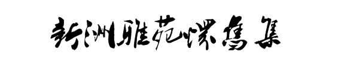
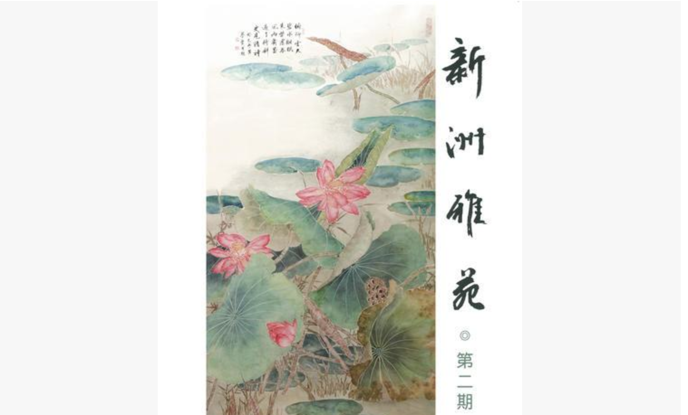

首頁
專題
雙林寺詩詞
新洲雅苑懷舊集
新加坡大專文學獎--漢詩組得獎作品
國立大學學生作品
春聯比賽得獎作品
新加坡楹聯
名勝古跡
南洋風俗
地方語言
南洋物產
星洲風月
佛語禪心
淪陷時期
詩社
檀社
新聲詩社
獅城吟社
全球漢詩總會
更多
詩人訪談
詩人吟唱
詩集
詩人生平
研究論文
關於我們

新洲雅苑怀旧集 01 （1901）
作者 01
诗歌引言
诗句1。
诗句2。
诗句3。
诗句4。